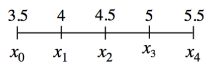

Let \(f ( x ) = \sqrt { x ^ { 2 } + 5 }\).
Graph the function for \(1\le x\le6\).
Approximate the area under the curve over the given interval by using both five left endpoint rectangles and five right endpoint rectangles.
Consider the values on the \(x\)-axis and their corresponding subscript values as shown shown.
Write a linear equation for \(x_k\).
Express \(3.5+4+4.5+5+5.5\) in sigma notation.
For some function, \(f\), express \(f(3.5)+f(4)+f(4.5)+f(5)+f(5.5)\) in sigma notation.
How are parts (a), (b), and (c) related?

How can you tell if \(x+2\) is a factor of \(x^3-4x^2-3x+18\)? Is it?
Simplify: \(\large \frac { a ^ { 3 } - 2 a ^ { 2 } - 15 a } { a ^ { 3 } + a ^ { 2 } - 30 a }\)
Solve: \(\sin^2(2x+3)+\cos^2(2x+3)=2x+3\)
\(y\) varies directly as the square root of \(x\) and \(y=11\) when \(x=4\).
Express \(y\) as a function of \(x\).
What is the value of \(x\) when \(y=44\)?
Graph the piecewise-defined function shown and determine if the function is continuous at \(x=2\). Explain your reasoning. \(f ( x ) = \left\{ \begin{array} { l l } { x ^ { 2 } + x + 1 } & { \text { for } x \leq 2 } \\ { - \frac { 1 } { 2 } x + 7 } & { \text { for } x > 2 } \end{array} \right.\)
Graph the function \(f(x)=(x-5)(x+4)\).
How is the graph related to the equation?
Use what you noticed in part (a) to write the equation of a quadratic function that has \(x\)-intercepts of \((-6,0)\) and \((3,0)\).